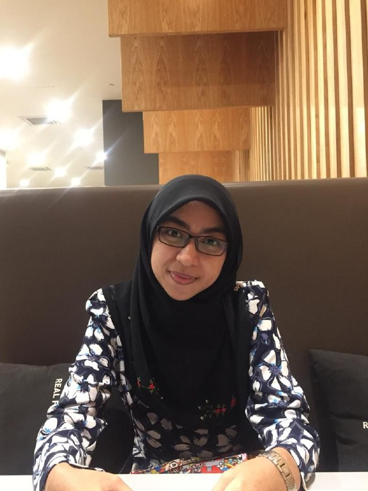
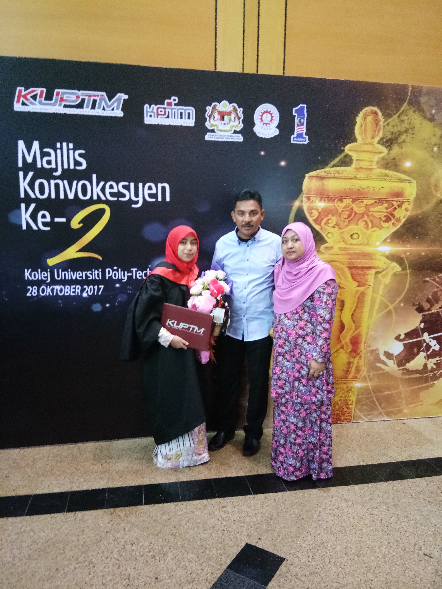
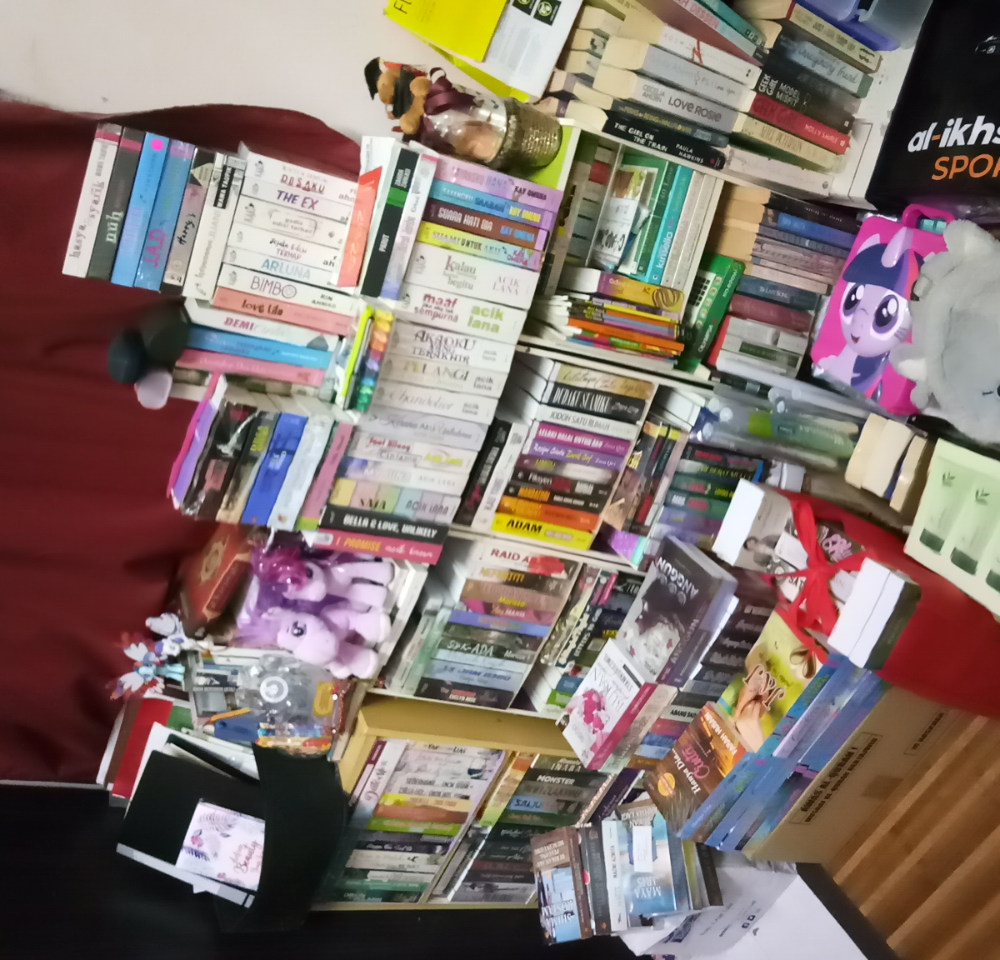

MY PERSONAL BIOGRAPHY
Hello there! Let's check my biography out.

Name given is Wan Nursyamimi Aqila bt Wan Mohd Zaki by my beloved parents. Some of my friends call me Mimi while some of them call me Aqila. My age? Shhh... My family and I live in Kota Bharu, Kelantan. I am currently a Bachelor in Office System Management student in UiTM Machang, Kelantan under the Faculty of Business and Management.
My Diploma Years

I was studying Diploma in Teaching English as a Second Language (TESL) in KUPTM Kuala Lumpur, Cheras. Throughout my diploma years, I've been involved in so many events such as Teather Project, Voluntary Trip and English Week. For the Theather Project, I was assigned to handle the backstage involving the venue reservations, transportations for the talents and looking for sponsors. Then in my second year, my course has done the Volunteer Work which was held at The National Zoo. We fed the animals, cleaned animal's barn and bathed the animals. For our final year project, we are instructed to do an English Week at the primary school nearby the college.
My Hobby

My all time hobby is reading books. I love to read all kinds of genre for English and Malay novels. For the time being, I already collected 538 Malay novels and 388 English novels. I also like to buy magazines of Reader's Digest. Wherever I go, I will bring along at least a magazine or novel in my bag especially when I go somewhere with a long journey.
- If you would like to interact with me, you can contact me through my social media
Visit my Instagram
Visit my Facebook